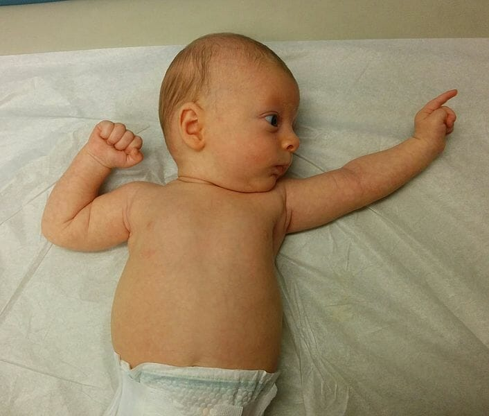
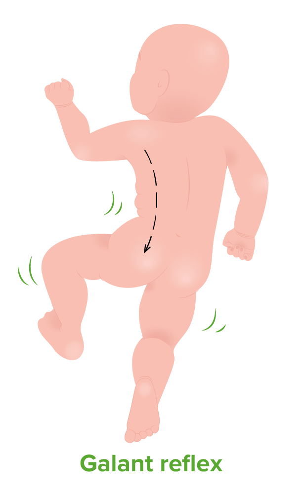

👶 Reflexos Primitivos
⚡ O que são e como testar
Respostas automáticas mediadas pelo tronco encefálico. A sua presença no recém-nascido demonstra integridade neurológica, e o seu desaparecimento gradual indica a maturação cortical (inibição do reflexo).

Queda súbita da cabeça (amparada). Causa abdução/extensão dos braços, seguida de adução/flexão (abraço) e choro.

Tocar o canto da boca faz o bebê virar a cabeça para o estímulo (Busca) e iniciar movimentos de sucção ao tocar o palato.

Pressão na base dos quirodáctilos ou pododáctilos causa a flexão forte dos dedos. Plantar dura mais tempo.

[Inserir reflexo_rtca.png]'">Ao virar a cabeça do bebê para um lado, o braço/perna desse lado se estendem, e os do lado oposto se fletem.

Ao segurar o bebê em pé e tocar o dorso do pé na maca, ele eleva a perna simulando passos.

[Inserir reflexo_galant.png]'">Com bebê em pronação, estimular a região paravertebral faz o quadril fletir em direção ao lado estimulado.
📅 Tabela de Cronologia dos Reflexos
| Reflexo | Nasc. | 1m | 2m | 3m | 4m | 5m | 6m | 9m | 12m |
|---|---|---|---|---|---|---|---|---|---|
| Preensão Palmar | X | X | X | Diminui | Some | - | - | - | - |
| Busca / Sucção | X | X | X | X | Fica Voluntário | - | - | - | |
| Moro | X | X | X | X | Diminui | Diminui | Some | - | - |
| RTCA (Esgrimista) | X | X | X | X | X | X | Some | - | - |
| Preensão Plantar | X | X | X | X | X | X | X | Diminui | Some |
🌟 Principais Marcos do Desenvolvimento
📈 Progressão por Idade (Domínios)
O desenvolvimento segue o sentido Céfalo-Caudal (sustenta cabeça -> tronco -> pernas) e Próximo-Distal (braços -> mãos -> pinça fina).
2 Meses
🧸 Social/Emocional
- Sorriso social (sorri em resposta ao examinador).
- Acalma-se quando pegam no colo.
🗣️ Linguagem
- Faz sons além do choro (murmúrios/arrulhos).
🧩 Cognitivo
- Olha para o rosto de quem fala.
- Acompanha objetos com os olhos.
🏃 Físico/Motor
- Sustenta a cabeça momentaneamente em pronação.
4 Meses
🧸 Social/Emocional
- Sorri espontaneamente para chamar atenção.
- Imita expressões faciais.
🗣️ Linguagem
- Dá gargalhadas.
- Vocaliza (Ah, eh, oh).
🧩 Cognitivo
- Alcança objetos com as duas mãos.
- Leva objetos à boca.
🏃 Físico/Motor
- Sustentação cefálica completa (não tomba a cabeça).
- Rola (decúbito ventral para dorsal).
6 Meses
🧸 Social/Emocional
- Reconhece pessoas familiares.
- Gosta de se olhar no espelho.
🗣️ Linguagem
- Balbucio polissilábico ("ba-ba", "da-da").
🧩 Cognitivo
- Transfere objetos de uma mão para a outra.
🏃 Físico/Motor
- Senta com apoio (tripé).
- Rola nos dois sentidos.
9 Meses
🧸 Social/Emocional
- Ansiedade de separação (chora quando a mãe sai).
- Estranha pessoas desconhecidas.
🗣️ Linguagem
- Entende o "Não".
- Faz sons repetitivos ("mamama", "bababa").
🧩 Cognitivo
- Procura objetos escondidos (permanência do objeto).
- Bate dois objetos um no outro.
🏃 Físico/Motor
- Senta sem apoio.
- Pinça inferior (polegar e borda dos dedos).
- Engatinha (maioria).
12 Meses (1 Ano)
🧸 Social/Emocional
- Brinca de "esconde-esconde" (cadê o bebê? achou!).
- Entrega um livro quando quer ouvir história.
🗣️ Linguagem
- Fala 1 a 2 palavras com significado ("Mamãe", "Papai").
- Acena para dar "tchau".
🧩 Cognitivo
- Usa objetos corretamente (copo, escova de cabelo).
- Coloca blocos dentro de um recipiente.
🏃 Físico/Motor
- Anda com apoio (segurando nos móveis).
- Pinça fina (polegar e indicador).
18 Meses (1,5 Ano)
🧸 Social/Emocional
- Aponta para mostrar algo interessante.
- Brincar simbólico inicial (dá comida à boneca).
🗣️ Linguagem
- Fala ≥ 3 palavras (além de mamãe/papai).
- Segue comandos simples de 1 etapa ("Senta").
🧩 Cognitivo
- Rabosca espontaneamente.
- Empilha 2 a 3 blocos.
🏃 Físico/Motor
- Anda sozinho (sem apoio).
- Sobe degraus engatinhando ou com ajuda.
2 Anos
🧸 Social/Emocional
- Nota outras crianças (brinca *ao lado* delas - brincar paralelo).
- Apresenta comportamento desafiador.
🗣️ Linguagem
- Junta 2 palavras ("Quer água", "Mais leite").
- Conhece partes do corpo.
🧩 Cognitivo
- Segura o giz/lápis com os dedos (não com o punho fechado).
- Empilha ≥ 4 blocos.
🏃 Físico/Motor
- Corre.
- Chuta uma bola.
- Sobe e desce escadas (um degrau por vez).
🚨 Sinais de Alerta (Red Flags)
⚠️ Indicadores de Atraso ou Transtorno
A presença de qualquer um dos sinais abaixo exige avaliação neuropsicomotora detalhada e encaminhamento imediato para estimulação precoce.
🚩 Sinal Crítico e Universal
Perda de qualquer marco já adquirido em qualquer idade (regressão do desenvolvimento). Pode indicar doenças neurometabólicas, neurológicas ou TEA.
- Assimetria de movimento: Usa um lado do corpo muito mais que o outro (suspeita de paralisia cerebral).
- Aos 3 meses: Não sorri para as pessoas; não acompanha objetos com os olhos; mãos sempre fechadas.
- Aos 4-5 meses: Cabeça ainda tomba para trás (falta de controle cefálico); não leva as mãos à linha média.
- Aos 9 meses: Não senta sem apoio; ausência de balbucio ("dada", "mama").
- Aos 12 meses: Não aponta; não responde ao próprio nome; não brinca de esconde-esconde.
- Aos 18 meses: Não anda de forma independente; não fala nenhuma palavra com sentido.
- Aos 2 anos: Não junta 2 palavras; não corre; não entende comandos verbais simples.
Referências Bibliográficas:
• CDC’s Developmental Milestones (Centers for Disease Control and Prevention) - Atualização 2022.
• Manual de Avaliação do Desenvolvimento Neuropsicomotor - Departamento Científico de Desenvolvimento e Comportamento (Sociedade Brasileira de Pediatria - SBP).
• Caderneta da Criança - Ministério da Saúde do Brasil.
• CDC’s Developmental Milestones (Centers for Disease Control and Prevention) - Atualização 2022.
• Manual de Avaliação do Desenvolvimento Neuropsicomotor - Departamento Científico de Desenvolvimento e Comportamento (Sociedade Brasileira de Pediatria - SBP).
• Caderneta da Criança - Ministério da Saúde do Brasil.